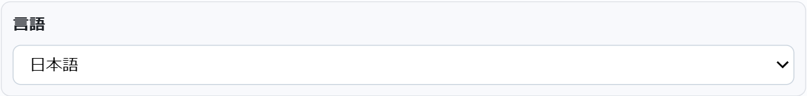
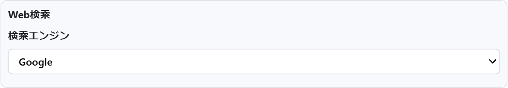
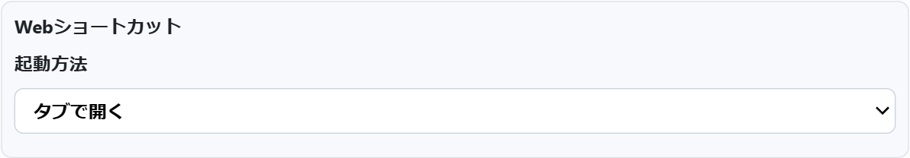
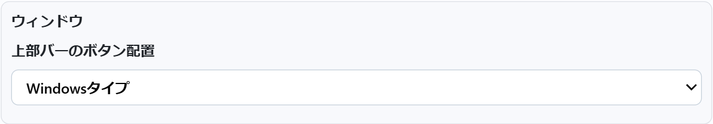
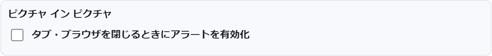
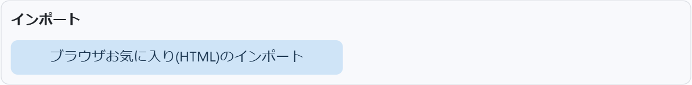
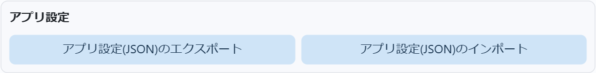
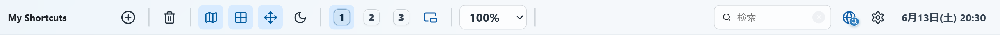

細かなところまで、自分好みに。
ツールバーのギア（⚙）アイコンから、いつでも開けます。
設定画面のぜんぶ。
変更はその場で保存。むずかしい設定はありません。

-
1
言語
アプリ全体の表示言語を切り替えます。メニューやボタンの文言がすべて変わります。
日本語English中文（简体） 한국어FrançaisDeutsch РусскийEspañolPortuguêsItaliano
-
2
Web検索 — 検索エンジン
ツールバーのクイック検索や検索ウィンドウから Web を調べるときに使う検索エンジンを選びます。
GoogleBingDuckDuckGo Yahoo SearchYahoo! JapanBrave Search EcosiaBaiduYandexNAVER
-
3
Webショートカット — 起動方法
Webショートカットを開いたときの動きを選べます。いつものタブで開くか、画面を離れずアプリ内のウィンドウで開くか。
タブで開くデスクトップで開く（アプリ内のウィンドウ）
-
4
ウィンドウ — 上部バーのボタン配置
フォルダや動画などのウィンドウにある、閉じる・最小化ボタンの位置を選べます。使い慣れた配置でどうぞ。
Windowsタイプ（右）Macタイプ（左）
-
5
ピクチャ イン ピクチャ
デスクトップを小さなウィンドウに切り出して表示しているとき、タブやブラウザを閉じようとしたら確認を出すかどうか。うっかり消してしまうのを防げます。
閉じるときにアラートを表示（ON / OFF）
-
6
インポート — お気に入り
ブラウザからエクスポートしたお気に入り（HTML）を選ぶと、これまでのブックマークをまとめてショートカットにできます。
ブラウザお気に入り(HTML)のインポート
-
7
アプリ設定 — バックアップ
並べたものや設定をまるごと 1 つの JSON ファイルに書き出し／読み込みできます。バックアップや、別の PC への引っ越しに。
JSON のエクスポートJSON のインポート
ツールバーから
よく使う切り替えは、ワンタッチ。
毎日変えるものは、設定を開かなくても上部のツールバーからすぐに。
- テーマ — ライト / ダーク
- グリッド吸着 — きれいに整列
- ミニマップ — 全体の表示 / 非表示
- ドラッグ操作 — 範囲選択 / 画面移動
- 表示倍率 — 50〜200%
- デスクトップ — 1 / 2 / 3 を切り替え
